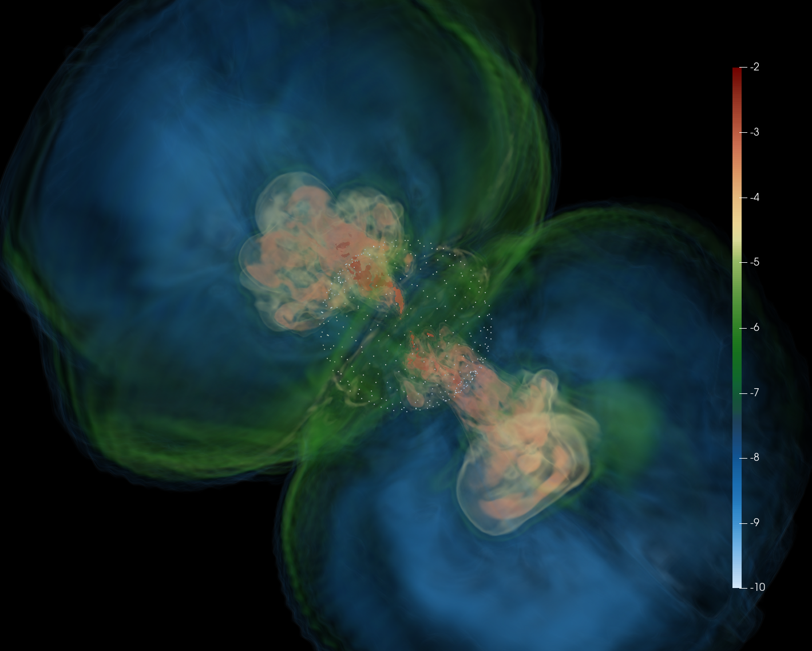
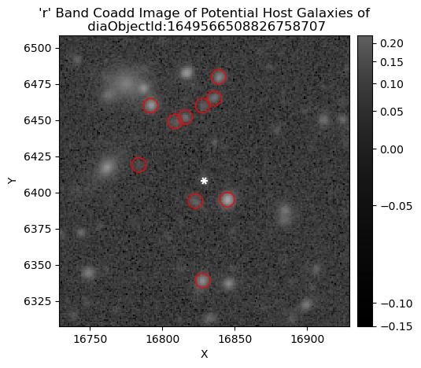
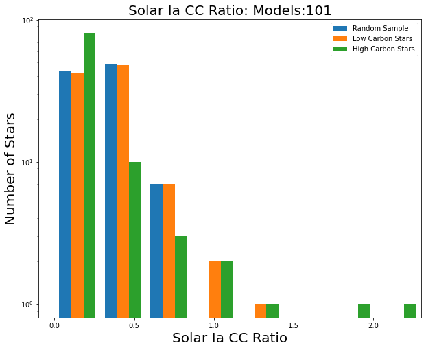

About Me

I am a Ph.D. student in Astrophysics & Computational Mathematics, Science and Engineering at Michigan State University, where I investigate compact objects, stellar explosions, and the extreme physics governing the most energetic events in the universe. My work sits at the intersection of high‑energy astrophysics, numerical simulations, and observational signatures of transient phenomena.
Before MSU, I completed my master’s degree at CUNY, working with Dr. Ore Gottlieb at the Center for Computational Astrophysics (Flatiron Institute). In that work, I analyzed 3D GRMHD simulations of collapsars—massive stars collapsing directly into black holes—with a focus on understanding how accretion‑disk dynamics generate outflows even in the absence of black hole spin.
Alongside research, I care deeply about mentorship, accessibility, and representation in STEM. Through programs such as AstroCom NYC, MSU Stellar Mentorship, and my outreach work organizing astronomy events, I aim to help build a more inclusive astrophysics community. My long‑term goal is a career in academia combining research, teaching, and community building.
Research

GRMHD Simulations of Non‑Spinning Black Hole Collapsars
My thesis work investigates the dynamical behavior of collapsars using the 3D GRMHD code HAMR. I simulate massive stellar collapse across different initial black hole spins. A major finding: even a non‑spinning black hole can launch subrelativistic, disk‑powered outflows capable of breaking out of the progenitor star—offering new insight into the transition between ordinary CCSNe and GRB‑producing collapsars.

Rubin Observatory DP0.2 Delegate
I adapted and implemented a Color‑Match Nearest Neighbor (CMNN) photometric redshift estimator for LSST Data Preview 0.2. This work matched transients to likely host galaxies and supported early LSST science development. Results were presented at AAS and APS meetings.

FOAMS: Chemical Evolution Modeling
I contributed to the FOAMS project by assembling APOGEE abundance datasets and fitting them to nucleosynthesis models. The goal is to constrain the relative contribution of Type Ia and core‑collapse supernovae across the Milky Way. With a large dataset now prepared, the next phase will analyze which elements best reflect the underlying SN population ratios.
Research Gallery
A collection of simulation snapshots, visualizations, and movies from my work in GRMHD, stellar collapse, and transient astronomy. Add your files and captions, and the gallery will auto‑format them.

Example image placeholder — replace with your file
Example movie placeholder — replace with your video

Another placeholder slot
Send me the filenames and captions for your actual gallery items, and I’ll replace these placeholders.